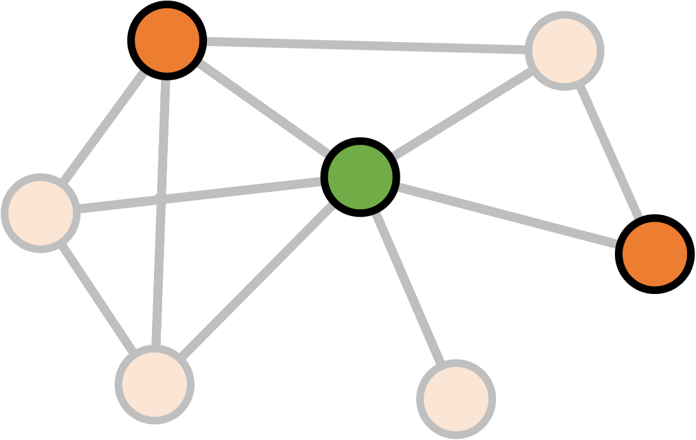
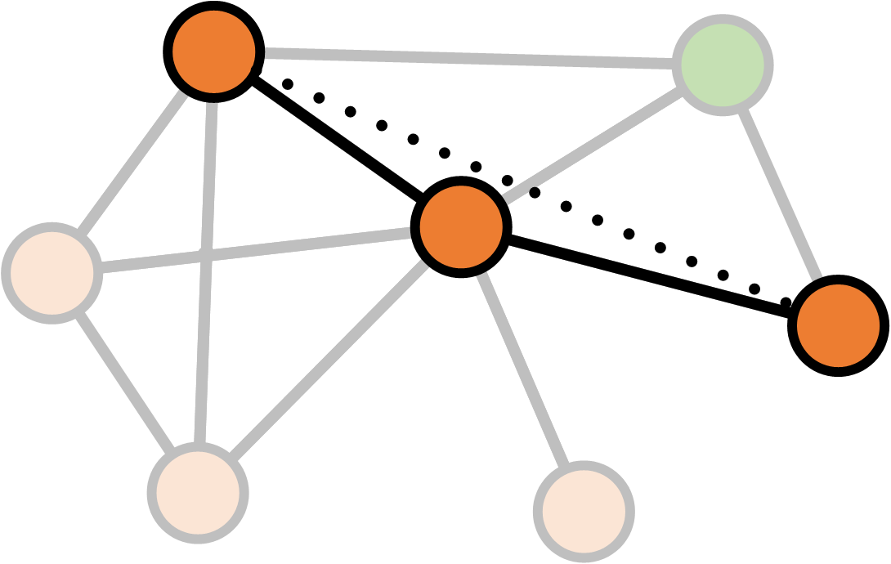

Full name: index.centrality
Polyglot data science
the force awakens
with F#, R and D3.js
- Evelina Gabasova @evelgab
- Tomas Petricek @tomaspetricek
Part I
F# with type providers
...
Visualization with Google Charts
Part II
Analyzing social networks with R
Social network analysis
- Who is the most central character?
- How to the movies compare between themselves?
Degree

Degree

Degree

Degree
\[\text{Degree}(v) = \text{Number of links }v \leftrightarrow v' \\ v \neq v'\]
Betweenness
Betweenness

Betweenness

Betweenness

Betweenness

Betweenness
\[S_v = \text{Number of shortest paths between $a$ and $b$ through $v$} \\ S = \text{Number of shortest paths between $a$ and $b$} \\ \\ \text{Betweenness}(v)_{ab} = \frac{S_v}{S}\]
Betweenness
\[S_v = \text{Number of shortest paths between $a$ and $b$ through $v$} \\ S = \text{Number of shortest paths between $a$ and $b$} \\ \\ \text{Betweenness}(v) = \sum_{ab} \frac{S_v}{S}\]
Network structure
How do the the movies differ?
- Size
- Density
- Clustering coefficient
Density
Density

Density
\[\begin{align} \text{Density} &= \frac{\text{Existing connections}}{\text{Potential connections}} \\ & \\ &= \frac{\text{Existing connections}}{\frac{1}{2}N(N-1)} \end{align}\]
Clustering coefficient
Clustering coefficient

Clustering coefficient

Clustering coefficient

Clustering coefficient

Clustering coefficient

Clustering coefficient
\[K_v = \text{Number of neighbours of $v$} \\ E_v = \text{Number of links between neighbours of $v$} \\ \\ \text{Clustering}(v) = \frac{E_v}{\frac{1}{2} K_v (K_v - 1)}\]
Clustering coefficient
\[K_v = \text{Number of neighbours of $v$} \\ E_v = \text{Number of links between neighbours of $v$} \\ \\ \text{Clustering}(\text{network}) = \frac{1}{N} \sum_v \frac{E_v}{\frac{1}{2} K_v (K_v - 1)}\]
The R language

- "domain-specific" language for statistical analysis
Very quick R intro
1: 2: 3: 4: 5: 6: 7: |
|
Very quick R intro: pipeline
|> turns into %>%
1: 2: 3: 4: 5: |
|
Network analysis with igraph
1: 2: |
|
Calculating degree
1: 2: 3: |
|
F#
1: 2: 3: |
|
Size
Density
Clustering coefficient
Part III
Visualization with D3.js